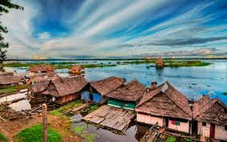
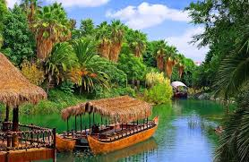
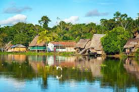
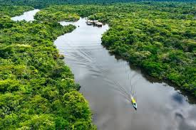

📍 1. Historia y Ubicación

- Ubicación: Región oriental del Perú, parte de la cuenca del río Amazonas.
- Representa más del 60% del territorio peruano.
- Ha sido habitada por diversas culturas indígenas desde tiempos ancestrales.
🌳 2. Paisaje y Biodiversidad

- Selvas tropicales con gran diversidad de flora y fauna.
- Ríos navegables como el Amazonas, Ucayali y Marañón.
- Es uno de los lugares con mayor biodiversidad del planeta.
🪶 3. Significado Cultural

- Hogar de numerosos pueblos indígenas con tradiciones únicas.
- Conexión espiritual con la naturaleza y la medicina ancestral.
- Importancia cultural en la música, danzas y festividades amazónicas.
🚤 4. Importancia Turística

- Destino ideal para ecoturismo y turismo de aventura.
- Visitas a reservas naturales como Pacaya Samiria y Tambopata.
- Actividades: paseos en bote, avistamiento de aves y contacto con comunidades nativas.